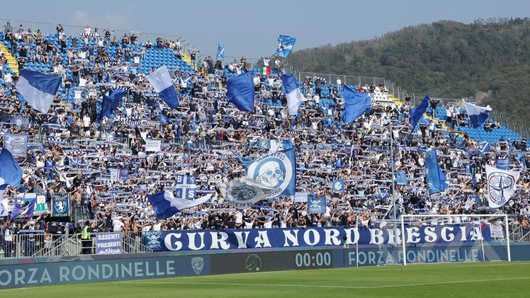

BRESCIA CALCIO
Il Brescia Calcio, più semplicemente noto come Brescia,è una società calcistica italiana con sede nella città di Brescia. Milita in Serie B, la seconda divisione del campionato italiano.
Fondato nel 1911, detiene i record di partecipazioni totali e di partecipazioni consecutive ai campionati di Serie B.
Tra i ventitré campionati di Serie A disputati, il miglior risultato del Brescia è stato l'ottavo posto ottenuto al termine della stagione 2000-2001.
In ambito internazionale ha vinto una Coppa dell'Amicizia nel 1967 e una Coppa Anglo-Italiana nel 1994; ha inoltre partecipato a due edizioni della Coppa Intertoto UEFA, disputandone una finale nel 2001. Dal 2024 è membro dell'European Club Association.
I TIFOSI

Il primo gruppo organizzato nacque agli inizi degli anni 1960 col nome 21+. Nel 1979 furono invece fondati gli Ultras Brescia (conosciuti anche come "U*BS"), settore della tifoseria che negli anni ha guidato la curva nord del Rigamonti e si è fatto apprezzare per calore e attaccamento alla maglia, ma si è anche reso famoso per essere stato un gruppo intransigente e molto turbolento, facile a scontrarsi con le tifoserie rivali e con le forze dell'ordine, allo stadio Rigamonti come in trasferta.
LA SQUADRA 24/25
| Numero |
Nome |
Ruolo |
| 1 |
Luca Lezzerini |
Portiere |
| 12 |
Michele Avella |
Portiere |
| 22 |
Lorenzo Andrenacci |
Portiere |
| 5 |
Gabriele Calvani |
Difensore |
| 15 |
Andrea Cistana |
Difensore |
| 18 |
Alexander Jallow |
Difensore |
| 19 |
Niccolò Corrado |
Difensore |
| 24 |
Lorenzo Dickmann |
Difensore |
| 28 |
Davide Adorni |
Difensore |
| 32 |
Andrea Papetti |
Difensore |
| 33 |
Zylyf Muca |
Difensore |
| 6 |
Matthias Verreth |
Centrocampista |
| 8 |
Birkir Bjarnason |
Centrocampista |
| 14 |
Giacomo Maucci |
Centrocampista |
| 21 |
Riccardo Fogliata |
Centrocampista |
| 23 |
Nicolas Galazzi |
Centrocampista |
| 25 |
Dimitri Bisoli |
Centrocampista |
| 26 |
Massimo Bertagnoli |
Centrocampista |
| 27 |
Giacomo Olzer |
Centrocampista |
| 39 |
Michele Besaggio |
Centrocampista |
| 7 |
Ante Juric |
Attaccante |
| 9 |
Flavio Bianchi |
Attaccante |
| 11 |
Gabriele Moncini |
Attaccante |
| 16 |
Luca D'Andrea |
Attaccante |
| 20 |
Patrick Nuamah |
Attaccante |
| 29 |
Gennaro Borelli |
Attaccante |
Torna alla Home